このマニュアルは、公式LINEの「お友達紹介プログラム」を店舗スタッフが管理画面で運用するための手引きです。
お客様側（LINE画面）の操作はお客様ご自身が行うため、本書では接客で必要な範囲のみ扱います。
1この機能でできること（全体像）
既存のお客様が知人へ公式LINEを紹介し、その知人がご成約に至ると、紹介した方・された方の双方にポイントが付与される仕組みです。
貯まったポイントはギフトカードに引き換えできます。
① 紹介
既存客が公式LINEから紹介URL・QRを知人へ共有
▶
② 友達追加
知人がURL経由で友達追加・LINE連携
▶
▶
▶
⑤ 引換
来店時にポイントをギフトカードへ引換（店舗対応）
スタッフが管理画面で行う主な操作は次の4つです。
- 紹介状況の確認（誰が誰を紹介し、今どの段階か）
- ギフトカードの発行記録（お客様のポイントを引き換える）
- クーポンの配布・使用（任意のサービスクーポン）
- 設定の確認・変更（ステージ条件・還元率など。基本は初期値のまま）
ポイントの付与・ステージ判定はシステムが自動で行います。スタッフが手計算する必要はありません。
2仕組みの基本 ― ステージ・ポイント・特典
紹介が成立する3つの条件
次の3つすべてを満たしたお客様が「紹介できる人」になります。
- 公式LINEと連携済みであること
- 顧客として登録済みであること
- ご成約済みであること（金額の下限はありません）
未成約のお客様には紹介URLが表示されないため、紹介を始められません。
ステージ（紹介実績に応じたランク）
紹介が成立（確定）した人数に応じて、紹介者のステージが上がり、還元率が高くなります。
| ステージ | 成立人数（初期値） | 紹介報酬の還元率（初期値） |
|---|
| ブロンズ | 0〜3人 | 3% |
| シルバー | 4〜6人 | 4% |
| ゴールド | 7〜10人 | 5% |
| プラチナ | 11人〜 | 10% |
人数のしきい値・還元率は管理画面で変更可能です（→ 8章）。上表は初期設定値です。
ポイント（特典）の中身
| 対象 | もらえるポイント | 付与のタイミング |
|---|
紹介した人
（紹介者） |
紹介者自身の成約金額の合計（税抜） × 自分のステージ還元率
例：自身の成約20万円(税抜)・シルバー4% → 紹介成立ごとに8,000pt（2026-07-21実装で基準額を変更。お友達の成約金額は影響しない） |
成約から1ヶ月後
（クーリングオフ期間の経過後） |
紹介された人
（被紹介者） |
固定 10,000pt（初期値） |
- 1ポイント＝1円換算です。
- 紹介報酬の計算基準は税抜・割引後の実成約額です。
- ポイントに有効期限はありません（無期限）。
- 紹介した人・された人は共通のポイント残高を持ちます。
ギフトカードへの引換
貯まったポイントは500円単位（初期値）でギフトカードに引き換えできます。現金でのキャッシュバックはありません。
ギフトカードは
店舗で発行してお客様にお渡しします。システムは「発行済み」の記録とポイント減算を行うだけです（→
5章）。
3管理画面のどこにあるか
管理画面の左メニュー「顧客」グループに、紹介関連のメニューが追加されています。
| メニュー | 用途 | 参照 |
|---|
| 🎁 友達紹介 | 紹介関係の一覧・ステータス確認・手動ポイント反映 | 4章 |
| ⚙ ステージ設定 | ステージ条件・還元率・各種設定値の変更 | 8章 |
| 🎫 クーポン | 任意配布クーポンのマスタ管理（作成・編集） | 7章 |
個々のお客様のポイント残高・ギフトカード発行・クーポン配布は、
顧客詳細ページ → 「ポイント・ギフト」タブ から行います（→ 5章）。
4日常業務①：友達紹介一覧を確認する
左メニュー 顧客 ＞ 友達紹介 を開くと、紹介関係の一覧が表示されます。
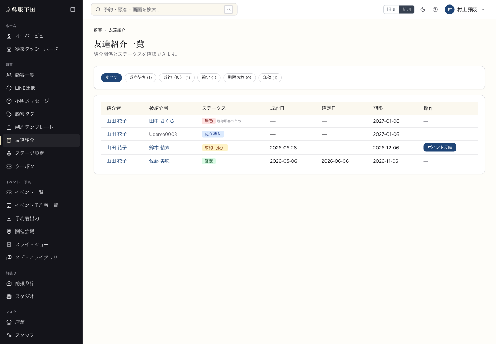
図1友達紹介一覧（左メニュー「顧客」グループに 友達紹介／ステージ設定／クーポン が並びます）
ステータスの意味
| 表示 | 意味 | スタッフの対応 |
|---|
| 成立待ち | 友達追加・連携は済んだが、まだ成約していない | 成約を待つ（対応不要） |
| 成約（仮） | 被紹介者が成約。確定（1ヶ月後）待ち | 原則不要。急ぐ場合のみ手動反映可 |
| 確定 | 成約1ヶ月経過し、ポイント付与済み | 完了 |
| 期限切れ | 友達追加から6ヶ月成約なしで失効 | 対応不要 |
| 無効 | 自己紹介・既存顧客などで無効化 | 対応不要（右に理由が表示） |
- 上部のフィルタボタンでステータス別に絞り込めます（各ボタンに件数が表示されます）。
- 紹介者・被紹介者の名前をクリックすると、その顧客詳細ページへ移動します。
- 被紹介者がまだ顧客登録されていない場合は、名前の代わりにLINE IDが表示されます。
「ポイント反映」ボタンについて
ステータスが 成約（仮） の行にだけ ポイント反映 ボタンが出ます。
通常は押す必要はありません。成約から1ヶ月後に、システムが毎日自動で確定処理を行いポイントを付与します。
このボタンは自動処理を待たず、その場で即時にポイントを反映する操作です。
クーリングオフ期間（1ヶ月）を待たずに確定させることになるため、押す前に必ず店長・担当者に確認してください。
操作手順（手動反映が必要な場合）
- 対象の 成約（仮） 行の ポイント反映 をクリック
- 確認ダイアログで内容を確認し「OK」
- ステータスが 確定 に変わり、紹介者・被紹介者へポイントが付与されます
すでに確定済みの紹介や、成約がキャンセルされた紹介には反映できません（エラーメッセージが表示されます）。
5日常業務②：ギフトカードを発行する（ポイント引換）
お客様が来店され、ポイントをギフトカードに引き換えたいと申し出たときの操作です。
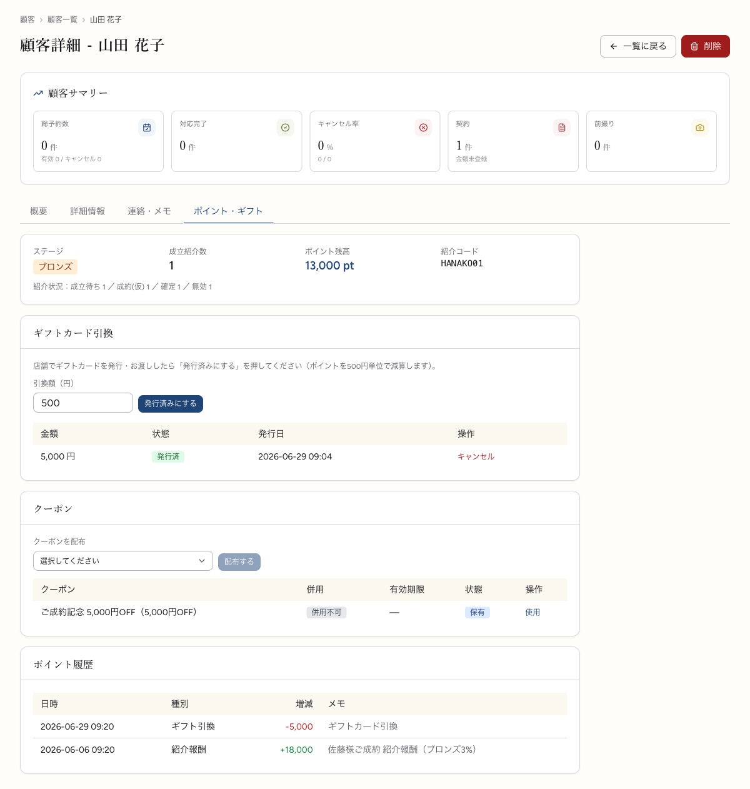
図2顧客詳細 ＞「ポイント・ギフト」タブ。上から サマリ（残高・ステージ）／ギフトカード引換／クーポン／ポイント履歴。5章・6章の操作はすべてこの1画面で行います。
操作の順番に注意。先に店舗でギフトカードを用意・お渡ししてから、管理画面で「発行済みにする」を押してポイントを減算します。
ボタンを押すとポイントが即座に減るため、お渡しできる金額を確認してから操作してください。
操作手順
- 対象のお客様の顧客詳細ページを開く
（友達紹介一覧の名前クリック、または顧客検索から）
- 「ポイント・ギフト」タブを開く
- 上部サマリで現在のポイント残高を確認する
- 「ギフトカード引換」欄の引換額（円）に金額を入力する
※ 500円単位・残高の範囲内のみ入力可
- 店舗でギフトカードを発行し、お客様へお渡しする
- 発行済みにする をクリック → ポイントが減算され、履歴に記録されます
確認できる情報
- サマリ：ステージ／成立紹介数／ポイント残高／紹介コード
- ギフトカード履歴：金額・状態（発行済／取消）・発行日
- ポイント履歴：紹介報酬・被紹介特典・ギフト引換などの増減明細
発行を間違えたとき（キャンセル）
- ギフトカード履歴で、取り消したい行の キャンセル をクリック
- 確認ダイアログで「OK」
- 状態が「取消」に変わり、ポイントが返還されます
キャンセルはポイントを戻す操作です。すでにお客様にお渡し済みの実物ギフトカードは戻ってきません。誤発行への対応としてのみ使用してください。
6日常業務③：クーポンを配布・使用する
紹介ポイントとは別に、任意のサービスクーポンをお客様へ配布・使用できます。配布したクーポンはお客様のLINE（マイポイント画面）に表示されます。
配布する
- お客様の顧客詳細ページ → 「ポイント・ギフト」タブを開く
- 「クーポン」欄の「クーポンを配布」から配布するクーポンを選ぶ
※ 選択肢に出るのは有効なクーポンのみ（マスタは7章で作成）
- 配布する をクリック
使用（利用済みにする）
- 同じ「クーポン」欄の保有クーポン一覧で、対象クーポンの 使用 をクリック
- 確認ダイアログで「OK」
- 状態が「使用済」に変わります
クーポンの状態は 保有 → 使用済 ／ 期限切れ と変化します。
「併用」欄はほかの割引と併用できるかを示します。
7クーポンマスタの管理
配布できるクーポンの「種類」を作成・編集します。左メニュー 顧客 ＞ クーポン を開きます。
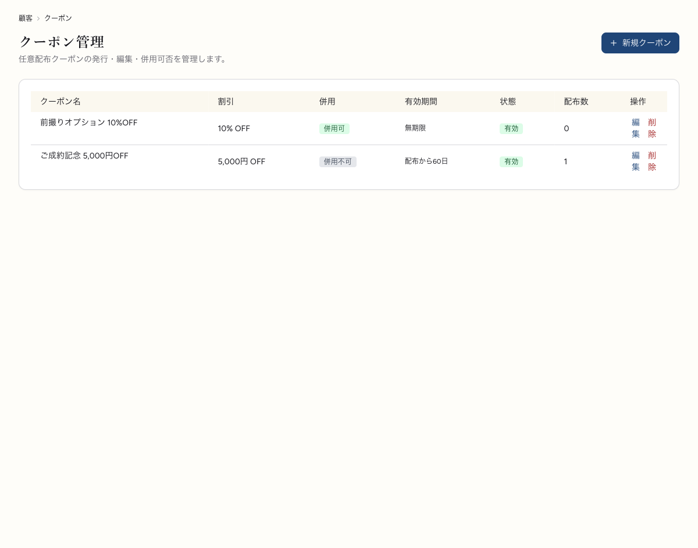
図3クーポン一覧。割引・併用可否・有効期間・状態・配布数を一覧で確認できます。
新規クーポンを作る
- 右上の ＋ 新規クーポン をクリック
- 入力欄を設定する（下表参照）
- 作成 をクリック
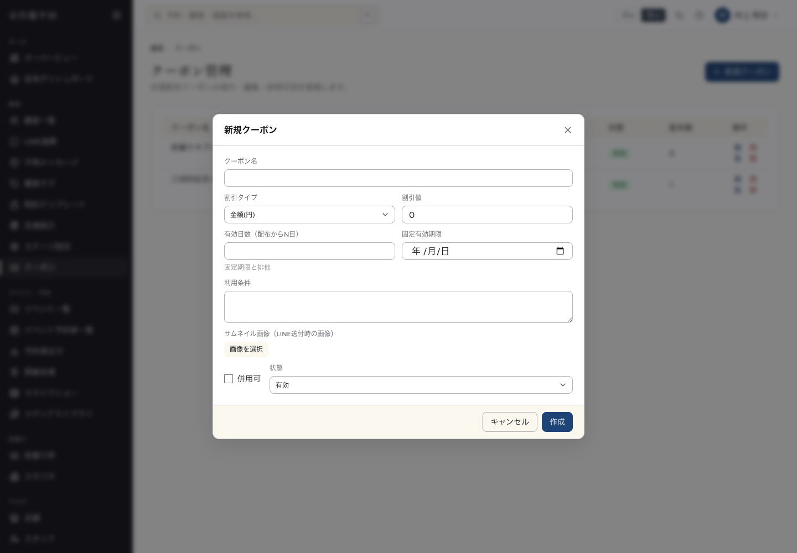
図4新規クーポン作成の入力画面。
| 項目 | 内容 |
|---|
| クーポン名 | お客様に表示される名称 |
| 割引タイプ／割引値 | 「金額(円)」または「率(%)」＋その数値 |
| 有効日数／固定有効期限 | 配布からN日で失効、または特定日まで（どちらか一方） |
| 利用条件 | 注意書き・利用条件のテキスト |
| サムネイル画像 | LINEで送る際の画像（メディアライブラリから選択） |
| 併用可 | チェックで他割引と併用可能に |
| 状態 | 有効／無効／アーカイブ |
- 編集：一覧の「編集」から内容を変更できます。
- 削除：「削除」を押します。ただし配布実績があるクーポンは削除されず「アーカイブ」になります（過去の配布記録を保つため）。
- 「配布数」列で、そのクーポンが何件配布されたか分かります。
8ステージ・特典の設定変更
ここはプログラム全体の条件を変える重要設定です。変更は店長・本部の承認のもとで行ってください。通常は初期値のまま運用します。
左メニュー 顧客 ＞ ステージ設定 を開きます。
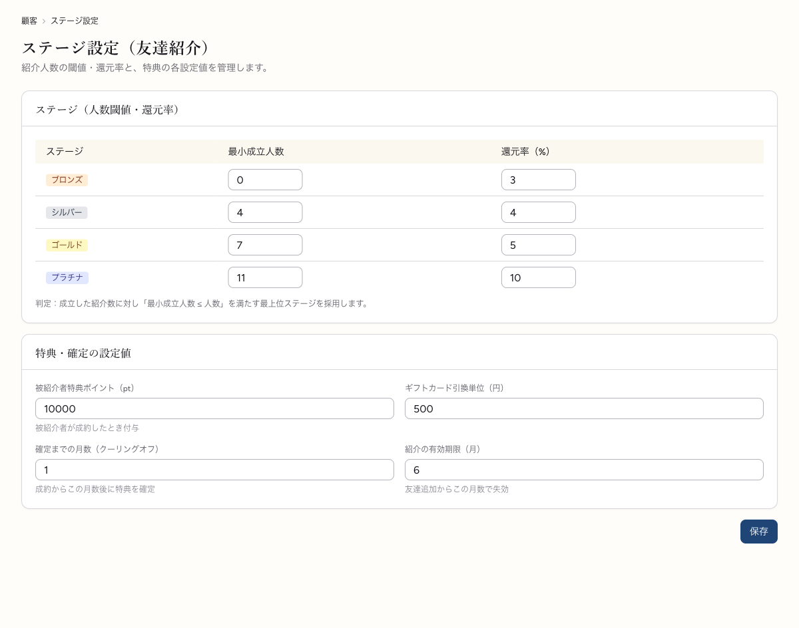
図5ステージ設定。上段でステージ別の人数しきい値・還元率、下段で特典・確定の各設定値を編集し「保存」します（画像は初期値）。
ステージ（人数しきい値・還元率）
各ステージの「最小成立人数」と「還元率（%）」を編集します。判定は、成立した紹介数に対して「最小成立人数 ≤ 人数」を満たす最上位ステージが採用されます。
特典・確定の設定値
| 設定項目 | 意味 | 初期値 |
|---|
| 被紹介者特典ポイント | 紹介された人が成約時にもらう固定ポイント | 10,000 pt |
| ギフトカード引換単位 | ポイント引換の刻み（円） | 500 円 |
| 確定までの月数 | 成約から特典確定までの期間（クーリングオフ） | 1 ヶ月 |
| 紹介の有効期限 | 友達追加から成約がないと失効するまでの期間 | 6 ヶ月 |
- 値を書き換える
- ページ下部の 保存 をクリック
変更は以後の判定・付与に適用されます。すでに確定済みのポイントは変わりません。
9お客様の流れ（接客のために把握）
お客様はLINEのリッチメニュー（4項目）から各機能を使います。スタッフが直接操作することはありませんが、お客様から「どこで見るの？」と聞かれたときに案内できるよう、各画面を把握しておきましょう。
リッチメニュー（トーク画面の下部）
公式LINEのトーク画面を開くと、下部に4つのボタンが並びます。ここが入口です。
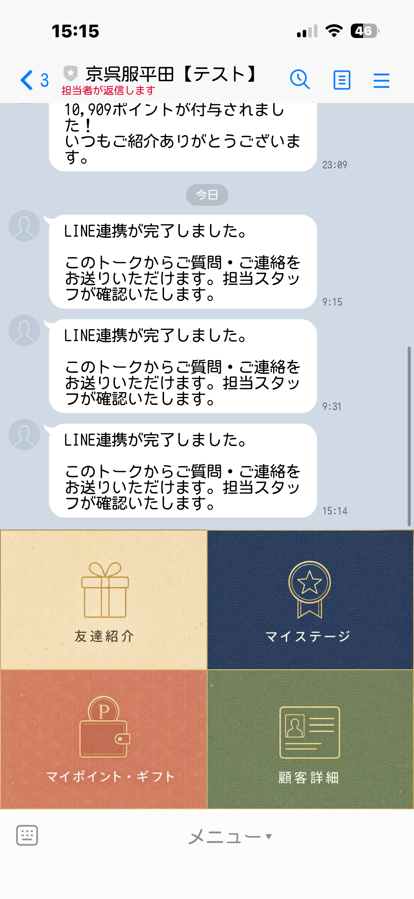
図6公式LINEのトーク画面下部のリッチメニュー（友達紹介／マイステージ／マイポイント・ギフト／顧客詳細）
各メニューの画面
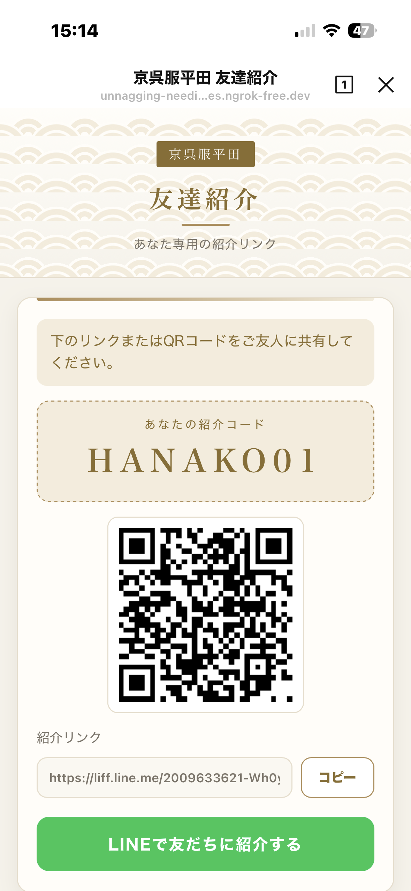
1友達紹介専用の紹介コード・QR・紹介リンク。「LINEで友だちに紹介する」で知人へ共有
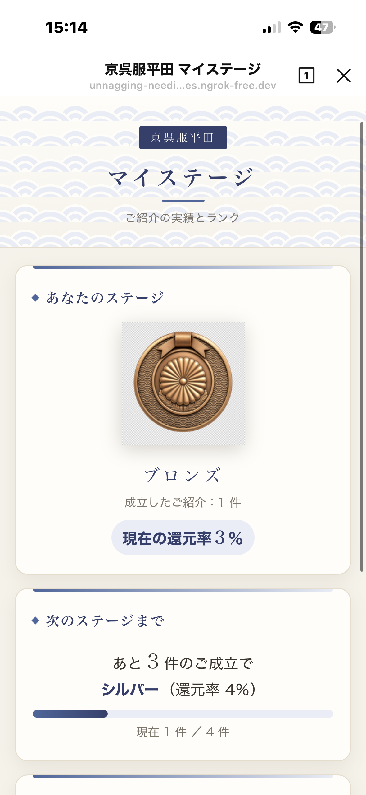
2マイステージ現在のステージ・還元率と、次のステージまでの残り成立人数
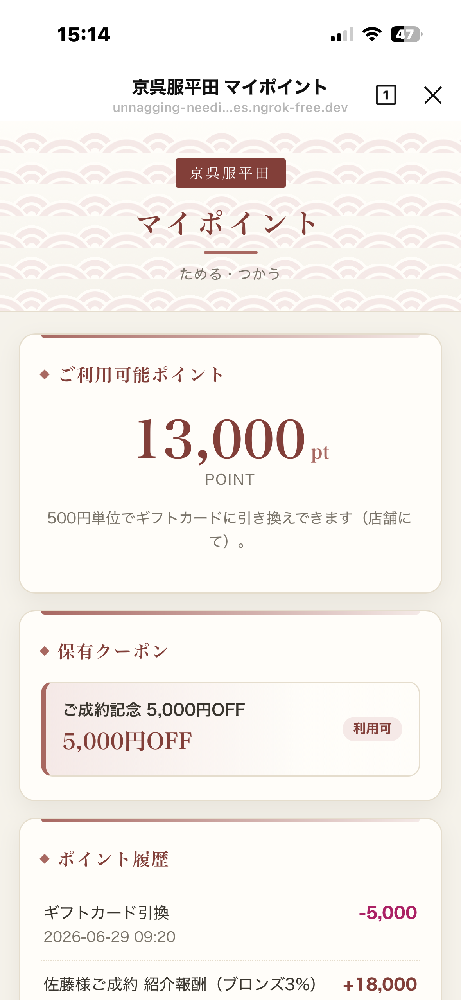
3マイポイント・ギフト利用可能ポイント・保有クーポン・ポイント履歴の確認
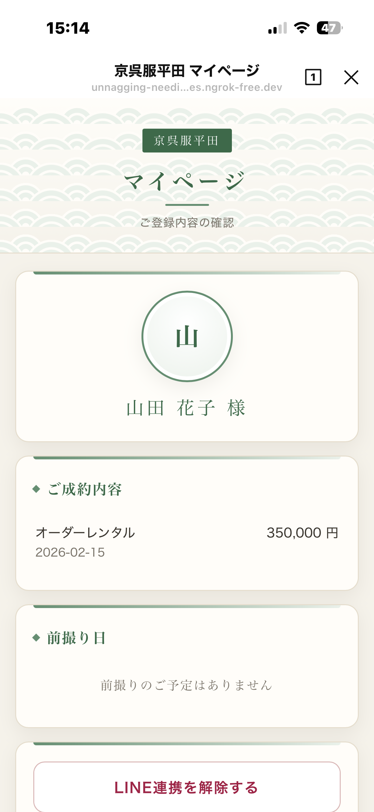
4顧客詳細（マイページ）ご登録内容・ご成約・前撮り日の確認（表示のみ）。LINE連携の解除もここ
管理画面との対応：お客様がここで見る「ポイント残高・履歴・保有クーポン」（上の③マイポイント・ギフト）は、スタッフが
5章の顧客詳細「ポイント・ギフト」タブ（図2）で操作した内容がそのまま反映されたものです。実際、図2と③は残高13,000pt・同じ履歴で一致しています。
紹介リンクを受け取った知人の画面
お客様が紹介した知人が紹介リンク（?ref=…）を踏むと、次の画面が表示されます。
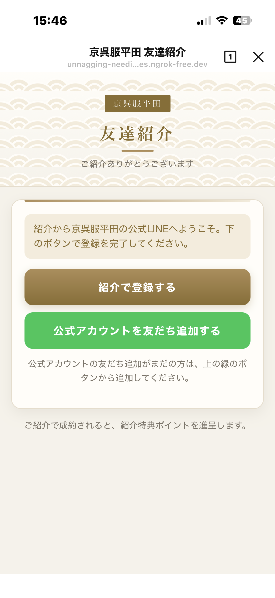
図7紹介を受けた知人の登録画面。「紹介で登録する」で登録が完了します。公式LINEをまだ友だち追加していない場合は、下の緑の「公式アカウントを友だち追加する」から追加できます。
紹介URLを受け取った知人は、URLをタップ → 友達追加 → LINE連携するだけで紹介が登録されます。
紹介者名はお相手には伏せられ、「お知り合いの方からのご紹介で…」とご案内されます。
友だち追加がまだの場合：紹介を受けた知人が公式LINEを友だち追加していないと、特典は正しく進呈されません。上図の緑のボタンから友だち追加していただくよう、お客様経由でもご案内ください。
10よくある質問・注意点
Q. ポイントはいつ付与されますか？
被紹介者の成約から1ヶ月後に、システムが毎日自動で確定処理を行い、紹介者・被紹介者の双方に付与します。スタッフの操作は不要です。
Q. 成約したのに紹介一覧が「成約（仮）」のままです。
正常です。確定（ポイント付与）は成約1ヶ月後です。急ぐ事情がある場合のみ、承認のうえ「ポイント反映」で手動確定できます（→ 4章）。
Q. 成約後にキャンセルになったら？
確定前（成約～1ヶ月以内）に成約が取り消されていれば、自動確定の対象から外れ、ポイントは付与されません。
Q. 紹介一覧に「無効」が出ています。
自己紹介（本人が本人を紹介）や、すでに顧客登録済みの人が紹介URLから来たケースなどで無効になります。異常ではありません。ステータス右の理由をご確認ください。
Q. ギフトカード発行を取り消したい。
顧客詳細のギフトカード履歴で「キャンセル」を押すとポイントは戻りますが、お渡し済みの実物は戻りません。誤発行時のみ使用してください（→ 5章）。
Q. ポイント残高がおかしい気がします。
顧客詳細の「ポイント履歴」で増減の明細（紹介報酬・被紹介特典・ギフト引換・取消返還など）を確認できます。不明な点はシステム担当へ。
取り返しのつかない操作に注意：
「ポイント反映」（手動確定）・「発行済みにする」（ポイント減算）は、お客様のポイント残高に直接影響します。
実行前に対象顧客・金額を必ず確認し、判断に迷う場合は店長・システム担当に確認してください。